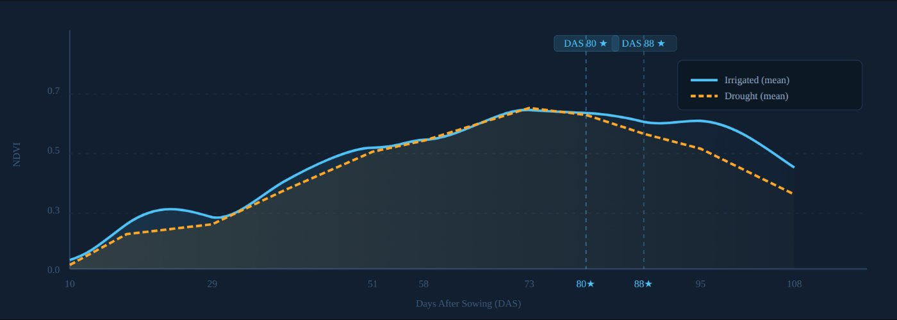
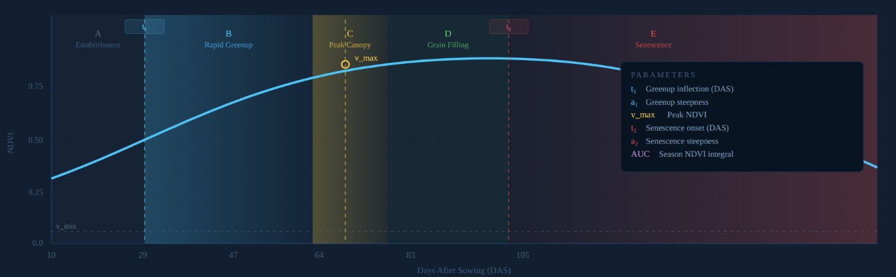
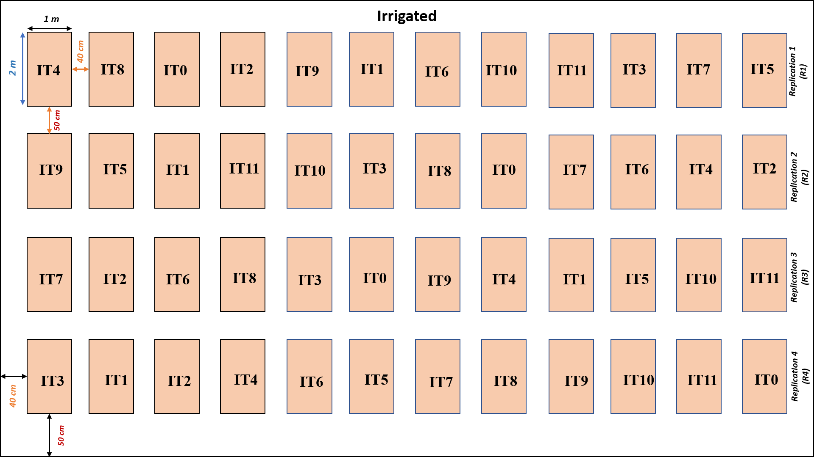

UAV-based yield prediction and phenology of wheat under drought and irrigation
How seaweed extract and nitrogen fertiliser shape wheat (BWMRI Gom-1) growth and yield under drought and full irrigation, tracked through a season of multispectral drone flights and modelled with vegetation indices, double-logistic phenology curves and machine learning.
- 96 field plots
- 11 UAV flights
- 20+ vegetation indices
- 24 treatment combinations
- 🛰️
Timing matters most
Imagery from the grain-filling stage carries the strongest yield signal; early-season flights add little.
- 🔴
Red-edge beats NDVI
Red-edge indices such as MTCI and NDRE tracked plot-level yield better than classic NDVI.
- 💧
Drought ends the season early
Both regimes reach similar peak greenness, but drought brings senescence forward by about ten days.
- 🌾
Grain filling drives yield
The length of the grain-filling phase explains most of the yield gap; nitrogen and seaweed extract extend it by delaying senescence.
- 📈
Simple, practical models
A few vegetation indices from two well-timed flights, plus irrigation status, give reliable yield estimates.



Preliminary results from the 2024 season. The analysis is being updated and has not yet been peer reviewed.